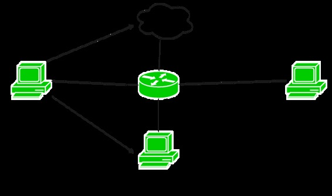
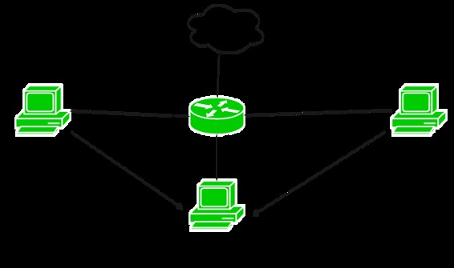

Prerequisite – Access-lists (ACL)
Access-list (ACL) is a set of rules defined for controlling the network traffic and reducing network attacks. ACLs are used to filter traffic based on the set of rules defined for the incoming or out going of the network.
Standard Access-list –
These are the Access-list which are made using the source IP address only. These ACLs permit or deny the entire protocol suite. They don’t distinguish between the IP traffic such as TCP, UDP, Https etc. By using numbers 1-99 or 1300-1999, router will understand it as a standard ACL and the specified address as source IP address.
Features –
- Standard Access-list is generally applied close to destination (but not always).
- In standard access-list, whole network or sub-network is denied.
- Standard access-list uses the range 1-99 and extended range 1300-1999.
- Standard access-list is implemented using source IP address only.
- If numbered with standard Access-list is used then remember rules can’t be deleted. If one of the rule is deleted then the whole access-list will be deleted.
- If named with standard Access-list is used then you have the flexibility to delete a rule from access-list.
Note – Standard Access-list are less used as compared to extended access-list as the entire IP protocol suite will be allowed or denied for the traffic as it can’t distinguish between the different IP protocol traffic.
Configuration –

Here is a small topology in which there are 3 departments namely sales, finance and marketing. Sales department having network 172.16.40.0/24, Finance department having network 172.16.50.0/24 and marketing department having network 172.16.60.0/24. Now, want to deny connection from sales department to finance department and allow others to reach that network.
Now, first configuring numbered standard access – list for denying any IP connection from sales to finance department.
R1# config terminal R1(config)# access-list 10 deny 172.16.40.0 0.0.0.255
Here, like extended access-list, you cannot specify the particular IP traffic to be permitted or denied. Also, note that wildcard mask has been used (0.0.0.255 which means Subnet mask 255.255.255.0). 10 is used from the number standard access-list range.
R1(config)# access-list 110 permit ip any any
Now, as you already know there is an implicit deny at the end of every access-list which means that if the traffic doesn’t match any of the rule of access-list then the traffic will be dropped.
By specifying any means that source having any ip address traffic will reach finance department except the traffic which it matches the above rules that you have made.
Now, you have to apply the access-list on the interface of the router:
R1(config)# int fa0/1 R1(config-if)# ip access-group 10 out
As you remember that the standard access-list is generally applied to the destination and here also if you apply access-list close to destination, it will satisfy our need, therefore, outbound to interface fa0/1 has been applied.
Named standard Access-list example –
Now, considering the same topology, you will make a named standard access-list.
R1(config)# ip access-list standard blockacl
By using this command you have made an access-list named blockacl.
R1(config-std-nacl)# deny 172.16.40.0 0.0.0.255 R1(config-std-nacl)# permit any
And then the same configuration you have done in numbered access-list.
R1(config)# int fa0/1 R1(config-if)# ip access-group blockacl out
Standard access-list for Telnet example –
As you know, you cannot specify a particular IP traffic to be denied in standard access-list but telnet connection can be permitted or denied using standard access-list by applying access list on line vty lines.

Here, in the given figure, you want to deny telnet to Finance department from any network. Configuring for the same:
R1(config)# access-list 10 deny any R1(config)# line vty 0 4 R1(config-line)# access-class 10 out